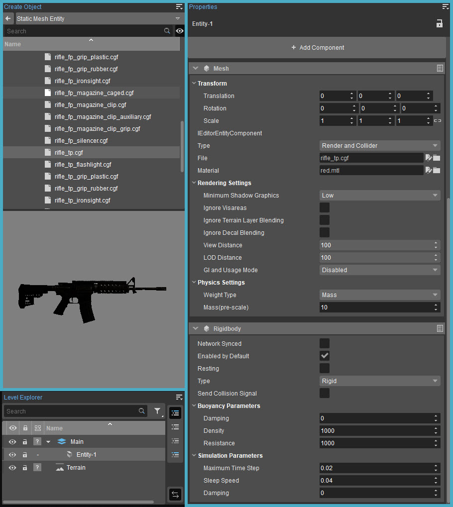

Overview
In CRYENGINE 5.4, the Geom Entity option has been renamed as Static Mesh Entity.
A Static Mesh Entity is a very simple entity that takes its physical parameters from its assigned geometry. They are interactive entities with physical values, so they behave like real life objects.
It is similar to a Basic Entity, but simpler, more efficient, and has fewer configurable parameters. The Static Mesh Entities which have physical properties set in the asset will be pushed away or break up in explosions, for example.
Navigate through the object library browser and drag the desired object to the scene. For more information, please refer to Entity Components.
